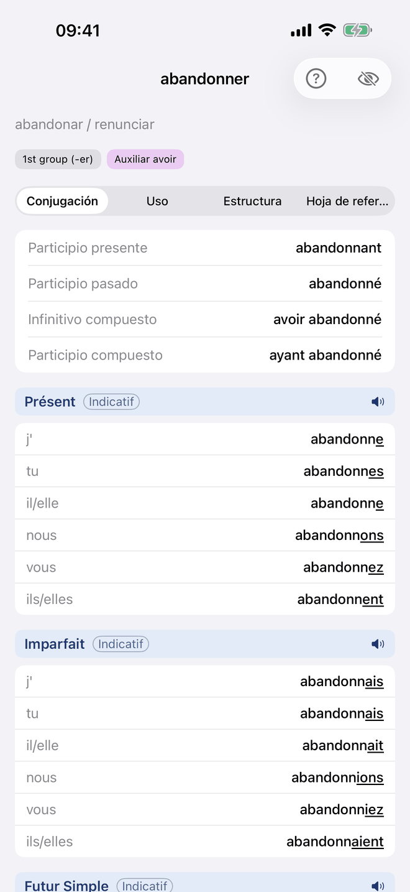
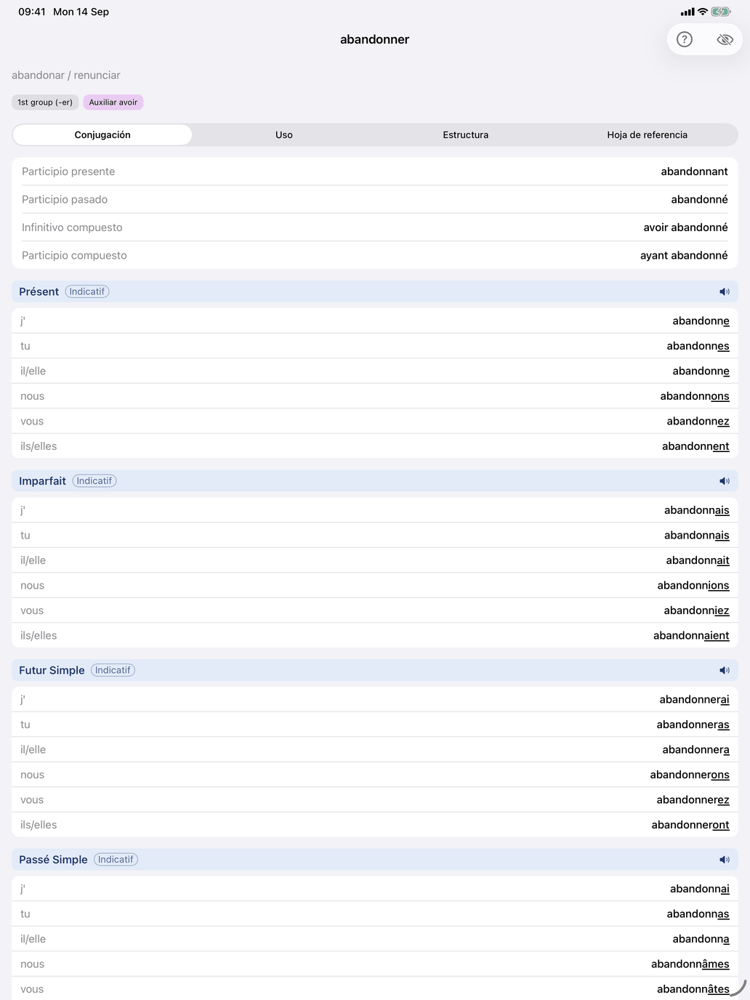
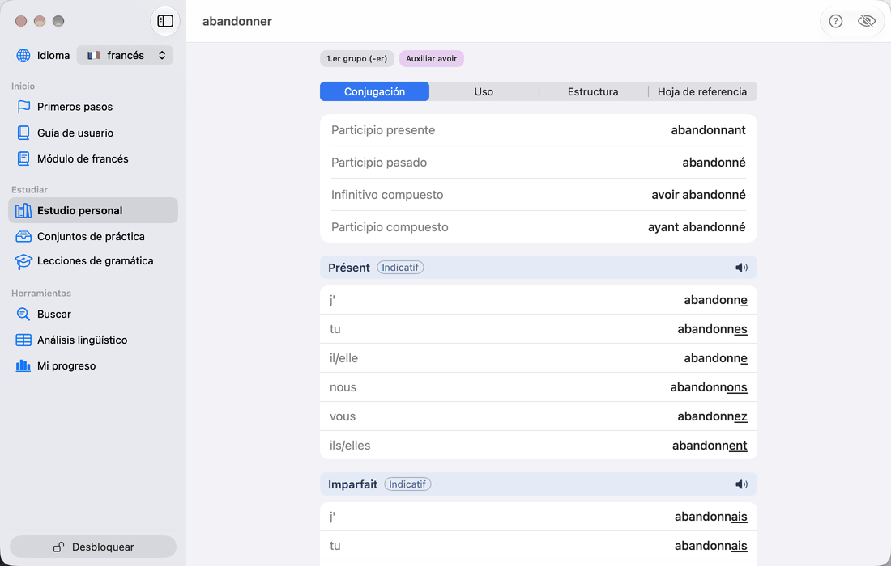
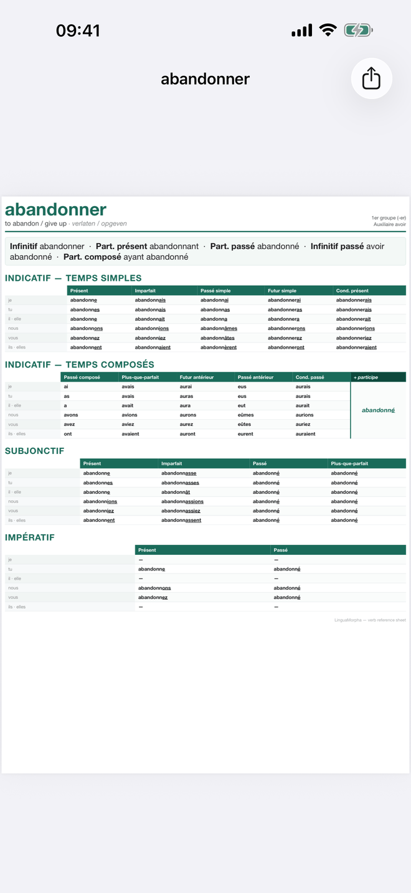
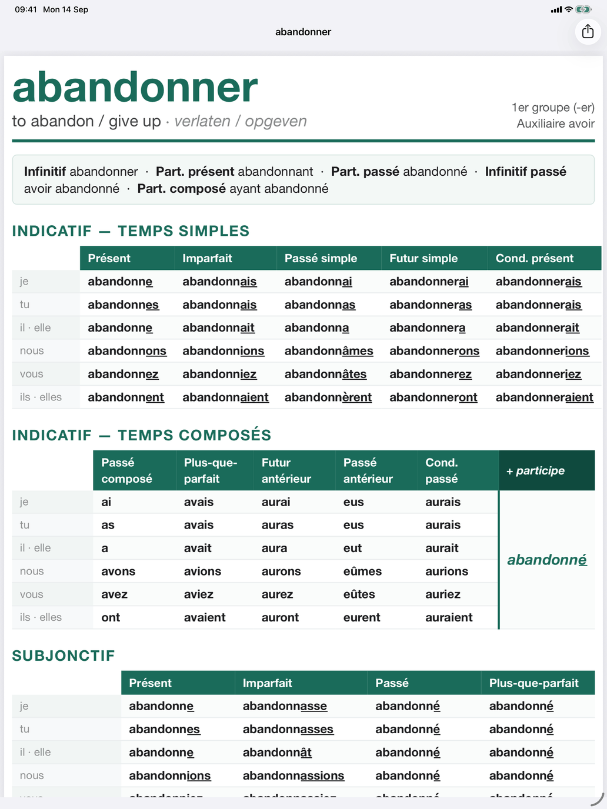
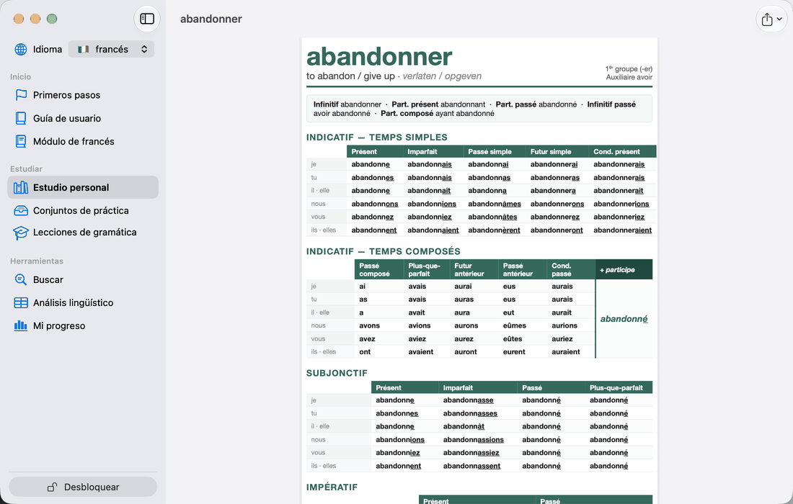
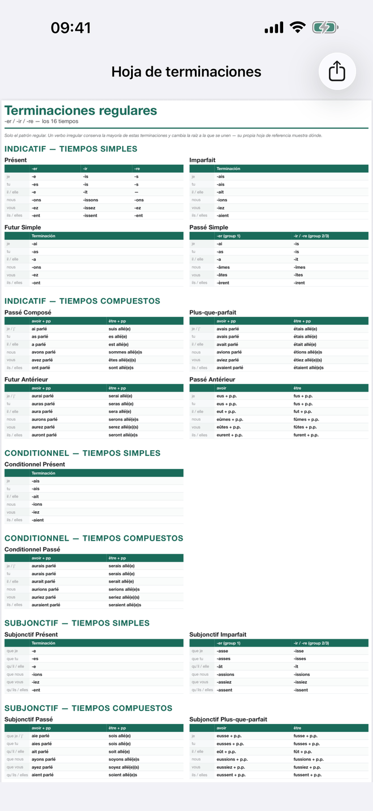
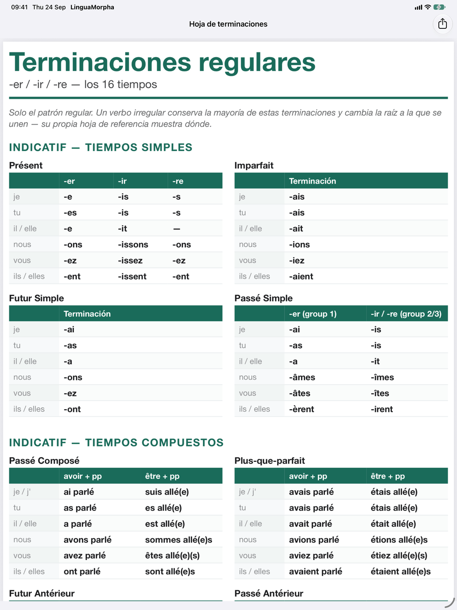
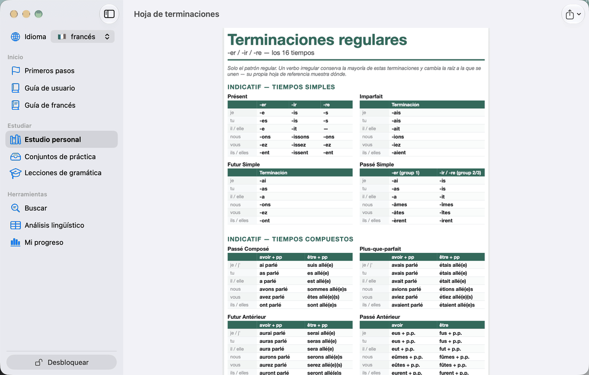

Tablas de conjugación



Toca cualquier verbo en Referencia de verbos para abrir su página. La misma página se abre desde la lista Ver todos los verbos de un grupo verbal y desde Buscar. El infinitivo del verbo es el título.
La cabecera
Encima de las pestañas ves qué significa el verbo y de qué tipo es:
- la traducción del infinitivo (en el Mac, junto al infinitivo en la barra de título);
- Significado ampliado, plegado — en un verbo con varias acepciones distintas, una lista numerada de ellas. Va con las traducciones: un esquema que no las muestra lo oculta también;
- el nivel del verbo, junto a las etiquetas de grupo: los grupos verbales a los que pertenece, como 1.er grupo (-er), Raíz e → è (achète) o Auxiliar être. Tienen el color de su apartado: gris para Básico, azul para Spelling, rojo para Cambios de raíz, morado para Auxiliar, naranja para Completamente irregular y verde menta para Subjuntivo irregular. Toca una etiqueta para abrir la tarjeta del grupo, con su explicación, un ejemplo desarrollado y Ver todos los verbos con el número de verbos del grupo. En esa lista, una familia verbal es una sola fila — prendre con +N por apprendre, comprendre y los demás verbos formados sobre él; toca la fila para ver la familia.
- en un verbo construido sobre otro — revenir sobre venir, prédire sobre dire — una nota de familia: «Pertenece a la familia de dire, con interdire, maudire». Donde el verbo se aparta de su base, la nota lo dice, forma por forma: prédire sigue a dire salvo en vous prédisez, no vous prédites. En el verbo base la nota enumera los miembros, y añade «Aprende este verbo y los tienes todos» cuando ninguno se aparta, como en venir.
Debajo hay tres pestañas: Conjugación · Regularidad · Hoja de referencia. La página se abre en Conjugación.
Conjugación
La pestaña Conjugación empieza con una tarjeta de las formas no personales: Participio presente, Participio pasado, Infinitivo compuesto y Participio compuesto (parlant, parlé, avoir parlé, ayant parlé). Debajo viene una tabla por tiempo, para los tiempos de tu nivel. Si tu nivel no tiene ninguno, la pestaña te lo indica. Cada tabla lleva como encabezado su tiempo y su modo y enumera las personas con sus formas. Bajo el nombre del tiempo, una línea dice para qué sirve, y bajo la tabla está la frase del propio verbo en ese tiempo, con su traducción y un botón de altavoz. En el encabezado, el icono del libro abre la teoría de ese tiempo — cuándo se usa, cómo se forma, sus terminaciones — y el icono del altavoz lee en voz alta todo el tiempo. Las formas están marcadas como se describe en El código de colores de la conjugación (francés).
Por tiempo / Por persona. Un selector encima de las tablas cambia la vista. Por tiempo muestra una tabla por tiempo, como arriba. Por persona les da la vuelta: un panel por persona — je, tu, … — con la forma de esa persona en cada tiempo y el nombre del tiempo encima de cada forma, para que veas cómo cambia la terminación de una persona de un tiempo a otro. El modo se indica donde cambia. El altavoz de un panel lee esa persona en todos los tiempos. La elección se conserva de un verbo a otro.
Solo tiempos irregulares. El botón de filtro de la barra muestra solo los tiempos en los que este verbo se aparta del patrón. La elección se recuerda para todos los verbos, en cada dispositivo. Mientras oculta tiempos, una nota sobre las tablas lo dice —«Solo tiempos irregulares: 4 de 16 mostrados.»— con Mostrar todos los tiempos para desactivarlo.
Por qué se aparta un tiempo. Bajo la tabla de un tiempo en que el verbo se aparta hay un bloque desplegable, con el veredicto como título — Parcialmente irregular, Terminaciones regulares, cambio de raíz. Abierto, da la razón en una frase, las raíces sobre las que se construye el tiempo (una raíz que aprender en ámbar) y, para cada persona que se aparta, la forma que predice el modelo, tachada, junto a la real.
Los verbos pronominales se muestran con su pronombre (je me lève). En el impératif afirmativo, el pronombre va detrás del verbo (lève-toi). Los verbos impersonales como falloir y pleuvoir solo se conjugan en la forma il.
El botón del ojo de la barra de herramientas muestra una traducción bajo cada forma conjugada. El francés tiene traducciones escritas para casi todos los verbos. En los verbos con un segundo significado, un segundo botón cambia todas las traducciones de la página a ese significado. El icono de libro de la barra de herramientas busca el verbo en diccionarios en línea.
Regularidad
La pestaña empieza con una tarjeta de datos sobre cómo está formado el verbo: su Auxiliar (avoir, être, o avoir / être con la nota «con objeto directo → avoir») y, en un verbo con se, su Forma (pronominal).
Regularidad responde a una sola pregunta: ¿dónde se aparta este verbo del patrón regular? Solo enumera los tiempos en los que lo hace, en el orden habitual de los tiempos. Cada fila tiene un punto de color y un veredicto: Terminaciones regulares, cambio de raíz, Terminaciones regulares, forma aprendida, Parcialmente irregular, Irregular o Sin patrón regular. Bajo un tiempo parcialmente irregular se enumeran las personas que se apartan.
Bajo cada tiempo aparece la raíz sobre la que se construye. Una raíz que tienes que aprender, como viendr- para el futuro de venir, aparece en ámbar. También una forma única que sostiene todo un tiempo, como el participio pris para los tiempos compuestos de prendre. Por eso esos tiempos compuestos indican Terminaciones regulares, forma aprendida: el auxiliar es regular, y lo que hay que aprender es el participio. Los dos colores responden a preguntas distintas. El ámbar de Regularidad señala una raíz o forma entera que memorizar; el rojo de Conjugación marca las letras de una forma concreta que se apartaron.
Una última línea nombra los tiempos que siguen el patrón (Regular en los demás tiempos: …); un verbo sin nada que aprender muestra solo Regular en todos los tiempos. Toca un tiempo para ir a él en Conjugación, con su explicación abierta bajo la tabla.
Hoja de referencia



Hoja de referencia es un PDF imprimible de una página con el verbo en todos los tiempos, sea cual sea tu selección, con las mismas marcas que las tablas. Su cabecera indica el grupo y el auxiliar del verbo. La hoja enumera las formas no personales, los tiempos simples y compuestos del indicatif, y el subjonctif y el impératif uno junto a otro. Los tiempos compuestos muestran las formas del auxiliar con el participio una sola vez a su lado. En iPhone y iPad, el botón de compartir envía, guarda o imprime la hoja; en el Mac, el menú de la barra de herramientas ofrece Copiar y Guardar como….
Patrones regulares



Patrones regulares, al final de la página Grupos verbales en Para imprimir, es la otra página para imprimir: las terminaciones regulares de los dieciséis tiempos a la vez, agrupadas por modo — indicatif, conditionnel, subjonctif, impératif — con los tiempos simples antes que los compuestos. Un tiempo simple da sus terminaciones por grupo, -er, -ir y -re donde difieren y una columna donde coinciden; un tiempo compuesto da el auxiliar, avoir o être, con el participio.
Es solo el modelo regular. Un verbo irregular conserva la mayoría de estas terminaciones sobre una raíz propia; su Hoja de referencia muestra dónde. Las tablas son las de las tarjetas de los tiempos en Tiempos — allí un tiempo cada vez, aquí los dieciséis.
Consejo: En Producir la conjugación y Reconocer la conjugación, una vez calificada tu respuesta, el icono del libro de la tarjeta muestra la tabla del verbo para ese tiempo. Resulta útil justo después de una respuesta incorrecta.